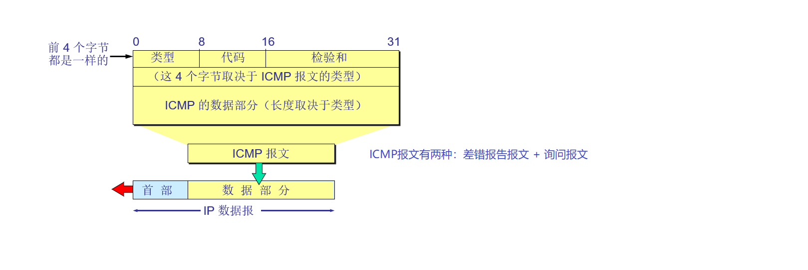

OSI参考模型第三层 网络层原理与技术

概述
网络层的主要任务
连通各个网络并在网络中传输数据，基于IP地址进行定位和分段（隔离广播域），减少网络的拥塞情况
网络层设备
路由器实现了不同网段之间的互连，其工作是基于IP地址决定是否对报文进行转发，如果转发，则选择最优路径进行转发
IP地址与子网
IP数据报/包(Datagram/Packet)

首部是由网络层封装在数据部分之前的一段帮助数据传输的内容，其包含的内容信息如下：
固定部分
版本
描述该IP数据报属于的协议版本，目前由IPv4和IPv6两种选项，两种选项下的报文结构有较大的差异，本文的内容仅适用于IPv4协议下的IP数据报结构
首部长度
描述首部的长度，长度为4bit，即最大值为15，单位为4字节（图中的一行），由于首部的固定部分有5行，因此首部长度的最小值为5
服务类型
长度为8bit，结构如上图顶部所示，在旧标准中一直未被使用过，前3位为优先级，优先级越高越先转发，其中的D，T，R，C，分别表示将数量、速度(time)、可靠性(reliability)、消耗少(consume)作为优先考量
总长度
长度为16bit，描述首部加上数据部分的长度总和，单位为字节，因此数字上数据报长度的最大值为65535字节，但其实际最大长度受到最大传输单元MTU的限制
标识
长度为16bit，在传输过程中经常存在一个IP数据报需要被拆分为多个小数据帧（称为分片）进行传输的情况，接收方收到的由一个IP数据报拆分出来的数据帧具有相同的标识，由此也可以看出每一个分片都需要携带相同标识的首部
标志
长度为3bit，首位为0，第二位为MF位，如果为1表示后续还有分片，如果为0表示后续没有分片；第三位为DF位，如果为1表示该IP数据报禁止分片，为0表示允许分片。值得指出的是需要将此标志与802.11帧的标志位进行区分，因为网络层的传输不面向连接，不需要确认，只负责尽量将数据送达目的地址，在后面的内容中也能体现这一点
片偏移
长度为13bit，用于描述在此分片之前的数据量，例如：
| 总长度 | 标识 | MF | DF | 片偏移 | |
|---|---|---|---|---|---|
| 原始数据报 | 3820 | 2333 | 0 | 0 | 0 |
| 分片1 | 1420 | 2333 | 1 | 0 | 0 |
| 分片2 | 1420 | 2333 | 1 | 0 | 175 |
| 分片3 | 1020 | 2333 | 0 | 0 | 350 |
可以发现三个分片的总长度为3860，这是因为多传输了两个长度为20字节的首部（注意首部长度上限是15*4 = 60字节），而片偏移的单位是8字节，且首部长度不计在内，因此片偏移分别是1400÷8 = 175，2800÷8 = 350
生存时间
$Time~To~Live$，长度为8bit，描述了数据报在网络中可以经过的路由器数的最大值，每经过一个路由器该数值减一，减到0则丢弃，取值上限是255，一定程度上能避免算法失效时死循环的出现
协议
长度为8bit，描述了该数据报的数据部分应该交由哪个进程处理，例如TCP、UDP、ICMP、IGMP、OSPF等，需要区分于版本中的协议
首部校验和
校验码，长度为16bit，只校验首部，而不校验数据部分，并且并不采用循环冗余校验，现在常常取0值，体现出了网络层只专注于将数据传输到目的地址的特点
源地址和目的地址
对于IPv4来说，长度均为32bit，也即4个0~255之间的数
可变部分
可选字段与填充
由于首部长度以4字节为单位，所以当可选字段并不能被4整除时需要填充位补齐4字节
IP地址
例如127.0.0.1
组成部分
网段ID(Network ID)
IP地址的前面数位，用来标识不同的区域/公司等
主机ID(Host ID)
IP地址的后面数位，用来标识该网段内的不同主机
分类
A类地址
前8位为网段ID，后24位为主机ID，适用于当前网段内有很多主机的情况($255\times 255\times 255$)
首位为0，即第一个数字的取值范围为0~127
B类地址
前16位为网段ID，后16位为主机ID，适用于当前网段内有较多主机的情况($255\times 255$)
首位为1，次位为0，即第一个数字的取值范围为128~191
C类地址
前24位为网段ID，后8位为主机ID，适用于当前网段内主机规模一般的情况($255$)
首位和次位均为1，第三位为0，即第一个数字的取值范围为192~223
D类地址
为功能性组播地址，以1110开头，即第一个数字的取值范围为224~239
E类地址
为研究留用地址，以1111开头，即第一个数字的取值范围为240~255
保留地址
每个网段的首地址（Host ID全0）保留用于表示网段地址(Network Address)
每个网段的末地址（Host ID全1）保留用于表示广播地址(Broadcast Address)
因此，每个网段中实际可用的IP地址会少两个
私有地址空间
为了解决上网设备过多，导致IP地址资源紧张的问题（IP address depletion），IP地址中分离出了一些私有地址，这些私有地址有：10.0.0.0~10.255.255.255, 172.16.0.0~172.31.255.255, 192.168.0.0~192.168.255.255
私有地址配合NAT，CIDR等技术以及最新的IPv6协议共同解决了IP地址耗尽的问题
子网Subnet
由于A类和B类地址中预留的主机ID数量太多，而一个地区内拥有如此大规模主机数的情况实在太过少见，导致了大量的IP地址的浪费，因此出现了子网的技术，原理是向主机ID借位表示网段ID，因此一个网段下可以划分出多个子网，使预留的主机ID数相对合理避免浪费
子网的存在为IP地址划分提供了灵活性，并可以让整个网段交由管理员进行子网的划分，由于子网本质上也是不同的网段，它们之间的连接需要路由器进行转发，隔离了广播域
借位数量
早期借位最少要借两位，因为子网技术早期并不携带子网掩码进行通信，导致如果只借一位，则借位取0则子网的网段ID与原网段ID没有区别，借位取1会导致发送广播时无法区分子网网段和原网段，出于这两个原因，子网借位不能取全0和全1
引入子网掩码后上述规则有更改，将在后面的内容中提到
最少要给主机ID保留两位，因为如果只保留1位，由于Host ID全0和全1都是保留地址，进而导致没有主机ID可以分配
子网的副作用
由于子网借位不能取全0和全1，因此导致了一些IP地址被浪费了，但是相对于原来的大量主机ID的闲置，利用率要高得多
子网掩码Subnet Mask
别名扩展网络前缀(Extended Network Prefix)，描述借了多少位来划分子网，其中置1的位表示为网段ID，置0位表示主机ID，例如A类地址的子网掩码为255.0.0.0，B类地址的子网掩码则为255.255.0.0，C类地址的子网掩码则为255.255.255.0
划分子网的步骤
- 根据IP地址所属类型(A/B/C类地址)决定默认掩码，例如C类地址的默认掩码为255.255.255.0
- 根据实际需要决定借位数量（注意两个-2问题），例如需要15个子网段和6个主机ID，则应该借5位（4位不够），保留3位
- 借位标1，保留位保留0
- 二进制转十进制，决定子网的取值范围和子网内的主机IP取值范围
第三层设备路由器
路径选择
路由器根据当前链路的带宽，延迟和当前报文的跳数等因素决定转发路径的下一跳，将报文转发给相应节点
配置与功能
端口配置
路由器的端口分为以太网口和串行接口，端口的IP地址必须要和连接的节点的IP地址处于同一网段，一般路由器端口的IP地址就是当前网段的网关IP地址
将端口作为网段网关也可以看出路由器的以太网口可以单独视为一个节点，它也具有独立的MAC地址，而串行接口一般用于路由器间通信，不具备MAC地址
路由器功能
路由器收到一条需要转发的报文后，就从其首部的目的地址中提取出目的地址的网段，然后从路由表中查询通过哪些端口可以抵达目标网段，并选择最优的端口进行转发
IP地址配置
静态配置(Static Addressing)
手动输入配置设备的IP地址，路由器，调制解调器等设备的IP只能通过此种方式获取
动态配置(Dynamic Addressing)
由进程自动分配获取，常见的IP动态配置协议如下：
- RARP(Reverse Address Resolution Protocol)，反向地址转换协议，由MAC地址在服务器上直接获取IP地址
- BOOTP(BOOTstrap Protocol)，引导程序协议，向服务器申请后动态获取
- DHCP(Dynamic Host Configuration Protocol)，动态主机配置协议
地址解析协议ARP
由于两台设备之间的通信需要互相了解彼此的IP地址与MAC地址才能成帧并发送，所以需要ARP这样一条协议来提供通过IP地址获取设备MAC地址的方法
ARP Table
在上线时设备会广播自己的IP地址与MAC地址，其他设备在接收到这样的广播信息后就会将设备IP到MAC地址的映射关系记录在RAM的ARP Table中，这样在成帧发送时就可以通过查询ARP Table来获取设备的MAC地址
如果在成帧发送时ARP Table中不存在相应IP地址设备的记录，则设备会使用广播地址询问其MAC地址，收到广播的相应主机进而进行应答
#小寄巧：使用下面的命令可以查看自己设备的arp table
arp -a
同时每进行一次通信（获取到某个设备的IP地址与MAC地址的映射关系），相关设备都会刷新自己的ARP Table中的相关记录，以防止不适应动态配置IP地址发生的变化
ARP攻击
因为ARP Table有不断刷新记录的行为，因此黑客可以随机生成MAC地址和IP地址然后不断发报，导致网段内其他主机的ARP Table中的所有映射都被刷新为无效数据，引发网络瘫痪
跨网段通信
默认网关
最常用的跨网段通信方式，报文从主机上发出后，先经过本网段默认网关进入到广域网，然后再从目的网段的网关进入到目的网段，最终找到目的主机的通信方式
网关的IP地址一般选为当前网段最小/最大的可用IP地址
ARP代理(Proxy ARP)
在旧式操作系统不支持配置默认网关时使用的跨网段通信方式，基本流程与默认网关一致，但是由于设备不清楚网关的地址，所以在通信前需要向路由器询问网关的IP与MAC地址，路由器以ARP reply的同种格式进行回复
网络层服务
面向连接网络服务
$Connection~Oriented~Network~Services$
面向连接指的是在传输数据开始之前，需要先建立一条数据发送方和接收方之间的连接线路，并等待双方同意建立连接后再开始传输数据
与链路交换(Circuit Switched)的区别
面向连接服务建立的连接是逻辑上的链路连接，并非真实存在这样一条专用链路，而是物理上可能使用了不同网络的不同部分
链路交换则是建立一条专用链路，并维护其运作，不允许被其他用途占用，同时在此链路上传递的信息不需要用指示信息来控制
不面向连接网络服务
$Connectionless~Network~Services$
不面向连接指的是在传输数据开始之前，不建立连接线路，分开处理每一个报文
与报文交换(Packet Switched)的区别
不面向连接网络服务中，不同的报文根据路由器的路径选择标准选择各自的最优路径，并不一定按顺序抵达，传输的路径也大部分不相同
网络层采用的服务
网络层最终采用的是不面向连接服务，因为网络层负责的任务仅仅是尽可能快速有效地将报文传输到目的地址，如果采取面向连接，则中心节点的负载太重，容易引起阻塞，并且报文数据的正确与否可以交由数据链路层进行检验，如果需要重发只需要更改802.3/802.11帧中的内容即可
被动与主动路由协议
被动路由协议
$Routed~Protocols/Routable~Protocols$
支持网络层的协议称为可路由协议，由于其路径选择是基于路由表（记录了某个端口所能抵达的网段），根据网段ID，因而被称为被动路由协议，典型的例子例如Internet Protocols(IP协议)
$Non-routable~Protocols$
不支持网络层的协议称为不可路由协议，典型例子例如NetBEUI协议，在WIN98中使用，但因为其不支持网络层，所以无法在广域网上定位，但是它在局域网内的速度会更快
静态路由与动态路由
静态路由(Static Routes)
静态路由是通过手动配置路由表完成的
适用于隐藏用户真实ip，测试特定链路是否正常，局域网只有一个出口的情形
动态路由(Dynamic Routes)
动态路由则是通过主动路由协议，使可达信息在路由器之间相互传递并记录，自动更新路由表，常用的主动路由协议有RIP，IGRP，EIGRP，OSPF等
IGP(Interior Gateway Protocols)
内部网关协议，在自治系统内部使用的动态路由协议，典型例子有RIP，IGRP，EIGRP和OSPF
其中又可分为：
- DVP(Distance Vector Protocols)
- LSP(Link State Protocols)
其中DVP基于距离向量(经过路由器的跳数)进行分配，每个路由器仅可见自己的相邻路由器，不可见整个网络拓扑，不管路由信息是否有更改都会定期发送路由表的拷贝，以适应网络的变化并完成心跳检测，例如RIP（Router Information Protocol，最常见，最大跳数是15，每30s更新）和IGRP（Interior Gateway Route Protocol，最大跳数达到255，每90s更新，EIGRP为Enhanced IGRP，是混合主动路由协议[hybrid routing protocol]）
LSP基于链路的性能和带宽进行分配，整个网络的拓扑都可见，直到路由信息发生更改才会发送链路改变的状态信息，例如OSPF（Open Shortest Path First）
EGP(Exterior Gateway Protocols)
外部网关协议，在多个自治系统之间使用的动态路由协议，典型例子有EGP（由于安全性被淘汰）和BGP，代表每个自治系统与另外的自治系统建立联系的称为BGP发言人
主动路由协议
$Routing~Protocols$
主动路由协议决定被动路由协议可以选择的路径，或者说主动路由协议维护被动路由协议所依赖的路由表
Routing Protocols determine how Routed Protocols are routed.
VLSM
概述
分级路由(Classful routing)的报文中不携带子网掩码，因此要求整个网络内使用统一的子网掩码，例如A类地址的子网掩码固定为255.0.0.0
而VLSM(Variable Length Subnet Masks)是一种支持在网络内使用不同的子网掩码的特性，这样就可以根据网络的差异划分子网掩码的长度，为子网的划分提供灵活性，同时能更有效地使用资源有限的IP地址（由于携带了子网掩码，原网段ID能够与子网段ID相区分，所以全0子网可以被使用，同时更合理地利用主机ID的空间，但全1子网仍不能使用）
大部分的主动路由协议均支持VLSM，除了RIP v1，而RIP v2也已经加入了对VLSM的支持
VLSM划分步骤
- 首先算出借位数量，然后找出主机ID需求数最大的区域
- 将未分配的全部子网借位数扩展到主机ID数刚好容纳主机ID需求数的程度
- 将最小的子网分配给该区域，其他子网保持未分配状态
- 重复上述操作直到子网全部划分完毕
最终剩下的未分配子网可以给路由器的连接使用
路由聚集
$Route~Aggregation$
在引入VLSM之前还存在另一个问题，由于整个网络内只能使用统一的子网掩码，导致了划分出的子网必须全部记录在路由表中，引起了路由表容量需求的迅速膨胀，但引入了VLSM后，例如172.16.25.0/24，172.16.26.0/24和172.16.27.0/24……可以直接被记录为172.16.0.0/16，大规模减少了路由表中的记录条目，这个过程称为路由聚集，并且这个过程由VLSM自动进行
ICMP
$Internet~Control~Message~Protocol$，因特网控制报文协议是为了提高IP数据报交付成功机会而提出的，允许主机或路由器报告差错情况和提供有关异常情况的报告，ICMP报文作为IP数据报的数据部分进行发送
ICMP报文格式

差错报告报文的子类型包含：目的站不可达，源站抑制，超时，参数问题，路由改变等
查询报文子类型包含：回送请求和应答，时间戳请求和应答，地址掩码请求和应答，路由器询问和通告
其中目的站不可达又有很多子类型
- 网络不可达(net unreachable)
- 主机不可达(host unreachable)
- 协议不可达(protocol unreachable)
- 端口不可达(port unreachable)
- 源路由选择不能完成(source route failed)
- 目的网络不可知(unknown destination network)
- 目的主机不可知(unknown destination host)
ICMP报文中的数据部分并不包含原IP数据报的全部数据部分内容，而只是前8个字节
不应发送ICMP差错报告报文的情况
- 不对ICMP差错报告报文报错
- 对有分片的报文只报第一个分片的错误
- 不对多播（组播/广播）地址数据报报错
- 不对特殊地址（例如127.0.0.0和0.0.0.0）数据报报错
PING
$Packet~InterNet~Groper$
是用于测试主机之间连通性的常用手段，使用了ICMP的回送请求(Echo request)与回送回答报文(Echo reply)，是应用层直接使用网络层ICMP的典型案例，没有通过运输层的TCP或UDP协议